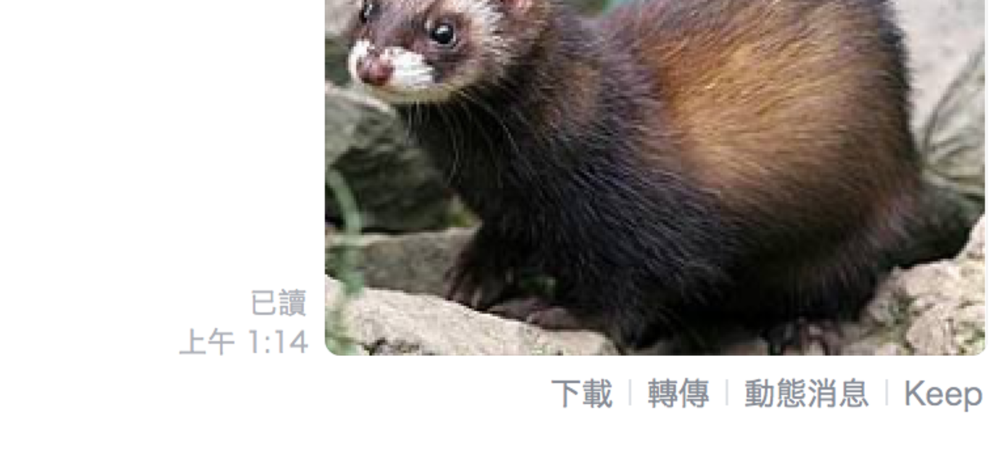

Hello World
CodeTengu Weekly 碼天狗週刊
CodeTengu Weekly 會在 GMT+8 時區的每個禮拜一 AM 10:00 出刊，每期會由三位不同的 curator 負責當期的內容，每個 curator 有各自擅長的領域，如果你在這一期沒有看到自已感興趣的東西，可能下一期就會有了。你也可以瀏覽一下前幾期的內容。
目前的 curator 陣容：
- @vinta - I failed the Turing Test - 科幻迷，最近在讀 The Forever War
- @saiday - Imnotyourson - 最近在看禪與摩托車維修的藝術
- @tzangms - Oceanic / 人生海海 - 衝動型購物
- @fukuball - ImFukuball - 徵會寫 HTML & CSS 的網頁設計師
- @mingderwang - Ethereum enthusiast
- @kako0507 - 熱愛嘗試新事物的前端工程師
- @chiahsien
- @hiroshiyui
- @uranusjr - Smaller Things - 不愛談技術的技術人，最近對做菜很有興趣
- @kkdai - 態度萬歲 - 喜歡 Golang 的略懂工程師，最近在學機器學習 (疑?)
- @yhsiang
你也可以關注我們的 Facebook、Twitter、GitHub 或微博，有很多 Weekly 看不到的內容。有任何建議或疑問也可以來 Gitter 聊聊，歡迎亂入。
 @tzangms
@tzangms
IT'S NOT A PROMOTION - IT'S A CAREER CHANGE
「管理職並不是升職, 而是轉換職業」 雖然這篇主題是這個，不過當中有兩個重點讓我覺得非常有趣，而且一語中地，真的是釐清我多年無法清楚說明的事。
- The Dunning-Kruger effect
- Systemic undervaluation of non-technical skills
而我最感興趣的就是 The Dunning-Kruger effect 了, 我便去找一下 Wikipedia 上的簡述:「達克效應是一種認知偏差，能力欠缺的人有一種虛幻的自我優越感，錯誤地認為自己比真實情況更加優秀。」
例如就軟體工程師來說, 常常會有以下狀況:
- 覺得自己懂的比其他人多、其他人什麼都不懂、覺得自己超強
- 覺得非技術性的工作都很廢
- 覺得管理沒什麼技術性可言, 廢
就我的個人經驗來看, 大部分 junior 工程師都會落入這種狀況, 會了一些東西之後, 覺得自己很強, 但是根本就還很菜, 因為很多東西都知道的太少, 設計時考慮的太少, 所以常會想出不夠周全的作法, 然後還覺得「有這麼難嗎?」
不過除了 D-K Effect 之外, 本文我真的是畫了很多重點, 值得看個幾遍, 像我也是在透過這篇評量過去的自己, 畢竟大家都 junior 過 (笑)
On-call at any size
On-call 這件事, 在不同團隊大小會有不同作法, 從 StreetVoice 早期只有我一個人在 On-call, 大概這樣經歷了 5 ~ 6 年, 一直到最近才換成我們系統工程師 Seanhsu0102 為第一線。
慢慢人比較多了, 前一陣子便開始思考用 PagerDuty 來做 rotate, 跟多層 On-call 的機制 (但是太忙還沒搞 XD)
On-call rotate 這件事我在第一份工作也碰過, 當時是第一線, 搞不定會有資深工程師可以求救, 而經理則是只會收到 mail, 除非在 30 分鐘或一小時後, 如果還沒解決時, 經理才會收到簡訊或手機通知, 看事情嚴重度。
這篇提到許多該做的機制、觀念跟對應的工具, 像是 log aggregator, error aggregator 等等, 值得一看, StreetVoice 大概只做到了 80% 左右(?)
當然, 有個足夠有經驗的人可以通靈當然是最棒的 (笑)
Culture at Spotify
矽谷的公司常會強調所謂的 Culture, 但是 Culture 到底是什麼, 怎麼說清楚講明白? 其實好像真的有點難, 或是常常講跟沒講一樣。
Spotify 這篇我覺得至少有滿明確的方向, 挺好的。
@hiroshiyui
"It's Just Emulation!" - The Challenge of Selling Old Games
講者 Frank Cifaldi (@frankcifaldi) 是 Digital Eclipse 這間公司的一員，也是 Video Game History Foundation 的創始成員之一。Digital Eclipse 承製了 CAPCOM 的「洛克人傳奇合輯」 (Mega Man Legacy Collection / Rockman Classics Collection)，運用了模擬器技術讓這系列老掉牙經典遊戲重新在當代的遊戲機上發行。
以講者對經典遊戲的熱愛，以及製作這款遊戲的經驗，他認為模擬器這東西長期被污名化，是時候該還它一個公道了。演講中除了列舉一些遊戲廠商與模擬器社群之間既敵視、又默默在吃後者豆腐的事蹟稍加挖苦，再以老電影不斷在各種記錄媒體上重現與傳承的例子，來譬喻模擬器其實可以視為「老遊戲的放映機」，對陪伴我們走過許多時光的經典遊戲來說，是一種數位典藏與近用的絕佳手段。
這段演講影片非常精彩，我很推薦對電玩遊戲有愛的大家花點時間收看。
I made an NES emulator. Here’s what I learned about the original Nintendo.
緊接著這篇還是在介紹模擬器，主因是我最近在嘗試讓家中的初代 Raspberry Pi Model B 能夠跑一些老主機上頭的經典遊戲，跌跌撞撞之間學到一堆冷知識。這篇就是在講，作者透過親身實作了一個紅白機（當然，歐美版的外殼並不是紅白色）模擬器，從中瞭解到紅白機的諸元運作方式，對於有志於開發紅白機模擬器的人來說，是一篇很不錯的觀念引導文。
此外，我自己所謂跌跌撞撞的經驗，主要是一開始認為「初代 Raspberry Pi 規格再怎麼不濟，模擬紅白機應該還是綽綽有餘，用它做個『自我流 Nintendo Classic Mini Family Computer』是可行的」結果紅白機並不是如憨人所想這麼簡單的東西，多支援一塊特殊處理晶片，多支援一種特殊 mapper，處理起來的程式複雜度就又不知增加多少倍，而模擬器本身又是一種 CPU intensive 的程式，要在玩家的感官可接受的限度內，「翻譯」這些經典遊戲的程式到現代的硬體上，追求翻譯的精準度 (accuracy)，就需要耗費極大的 CPU 運算成本。
同場加映：
Phoenix 1.3 is pure love for API development
這篇介紹了 Phoenix 這個 Elixir 的 Web 開發框架，在 1.3 版（到截稿為止還在 rc1）一些設計上的改變。其中對於專案目錄結構的變動，是最顯著的，我覺得這是 Phoenix 擺脫「Ruby on Rails 仿品」的包袱、更朝向 Elixir way 來設計，是很重要的一步。
此外，新增的 action_fallback 讓程式寫起來更具表述力，也更加精簡，透過這個 callback 可以把很多程式的後續處理集中在一起，對於像是 API 返回呼叫結果之類的場合很有幫助。
雖然 Phoenix 1.3 可能不是一個會讓人覺得酷炫潮夯、大刀闊斧的新改版，但的確是一個往好的設計方向去做的新版，各位手邊如果還有一些 1.3 之前的專案，現在就可以開始試著轉移到 1.3 了。
Building a CQRS/ES web application in Elixir using Phoenix
自從我來到目前這個需要「在有限時間內，處理瞬間巨量請求」的工作後，就開始去找這方面的資料來看。其中 CQRS 與 Event Sourcing 是我自己曾悶著頭想，但過了好一陣子，才發現早已有人提出來的兩種架構設計方法。
這篇文章作者詳細介紹了以 Phoenix 實作出 CQRS/ES 架構的應用程式實戰經驗，且是以傘形組織方式 (Umbrella) 把每個元件分而治之，整個開發環節都帶過了一次，對想要拿 Phoenix 做大事業的人是一份很好的參考學習範例，推薦給大家。
Man, ‘splained: 40-Plus Years of Man Page History — Truss
在泛 UNIX/UNIX-clone 系統上混，絕對少不了去找男人翻 man(ual) pages 的機會，但是 man 的歷史緣由、來龍去脈以及如何編寫，其實我自己也不求甚解（而且說實在的，groff 看了一眼就覺得阿雜，怎麼還能要求我去寫），我想跟我一樣對 man 既熟悉又陌生的人並不少，而這篇考古文，就概略地介紹了 man 這玩意兒，可說是 man 的科普文。
本期最後一篇，給大家介紹這個有點 geek 趣味的文章。
 @kkdai
@kkdai
kkdai/LineBotBabyLuis: A baby NLU chatbot using LUIS
大家好，這一次我會自肥自己兩個小 Chatbot 分享給大家（附帶原始碼) ．也希望讓大家了解一下如何使用 Golang 來架設 Chatbot ．
LineBotBabyLuis: 就是當初寫好專案 luis go sdk 之後說要寫一個會自我學習的 chatbot 的 POC 小專案．
這個 Chatbot 具有自我學習的功能（其實不過就是每次問他，他不認識的，就會請你告訴他是哪個 intent )
透過微軟 LUIS 的功能，這個 chatbot 就算沒有任何資料庫也能夠做到自我學習．並且不斷累積知識的功能．
想學學 LUIS 怎麼使用的人（透過 Golang API ) 也可以看看．
之後會再寫個中文部落格來介紹這個....

kkdai/LineBotAnimal: Line Bot Animal photo classification
為了 Chatbot Day 準備的聊天機器人第二彈
功能很簡單: 就是你上傳動物照片，他就會告訴你是什麼動物．
背後的機器學習模型就是鼎鼎大名的 Tensorflow Inception
細節就會在 04/27 的 IThome Chatbot Day 會講解....
註解: Tensorflow Inception 就是一個透過 CNN 建立出來的動物資料庫分類器
參考: https://github.com/tensorflow/models/tree/master/inception
Automatic Stackdriver Tracing for gRPC · Go, the unwritten parts
這篇講解了如何透過 Golang 來撰寫一個使用 stackdriver （也就是 Google 之前所併購的線上分散式追蹤 distributed tracing 的工具) 來查看在 gRPC 下問是否有任何問題．
想要試試看 Open Source 的 distributed tracing ? 那麼可以試試看最近進入 CNCF 的 Open Tracing ． 官方的部落格有一個範例讓你學習如何用 Golang 透過 Open Tracing 來追蹤 http latency ．
名詞解釋: CNCF (Cloud Native Computing Foundation) 是由 Google, Intel, CoreOS 與華為 等等各家網路 大公司所組成的協會．主要選取一些優秀的服務來推廣適合作為 Cloud Native Computing 之用.. 目前裡面的軟體有: Kubernetes, Prometheus, Fluentd 與 GPRC .. 等等 Cloud Native 上重要的服務
Linux, Netlink, and Go — Part 1: netlink – Medium
這篇文章看了好幾天，終於看完． 透過 #Golang 來介紹 Linux 中與 Kernel 溝通的另外一種方式 "Netlink"
本文的作者原來是在看 Prometheus 的一個工具 node_exporter 的時候發現一個跟 WiFi 的有關的 issue ，看了幾個禮拜後發現是 ioctl 太慢了... 於是就決定要換成 Netlink
[科普] Netlink Socket 是一種在透過 kernel 來傳遞訊息的方式，但是跟一般常用的 ioctl 不同的是 Netlink 透過 udp 來傳遞，不需要像 ioctl 一樣需要有透過 response ，所以他的速度比較快．
Netlink Socket 優點:
- 透過 UDP 沒有 ioctl 的 kernel round trip time
- 可以一次發給同一個 group 中的 user process
缺點:
- UDP 老問題.. 你不確定對方有沒有收到
- 由於透過 socket 其實感覺不如 ioctl 那麼的直覺
這篇文章也附上透過 Go 來實作 Netlink 的 github 可以看看
BTW: Prometheus 的 node_exporter 感覺很好用??
關於 Netlink Socket 可以參考
leandromoreira/digital_video_introduction: A hands-on introduction to video technology: image, video, codec (av1, h264, h265) and more (ffmpeg encoding).
[關於影像處理的完整介紹]
裡面包含圖片，各種影像格式 av1, h264, h265 的編碼格式與一些基礎原理外．也有 ffmpeg 的相關操作． 對於想要惡補或是回顧的人會有趣． 裡面的解釋都很清楚，有大量的圖片作為輔助．相當的棒！